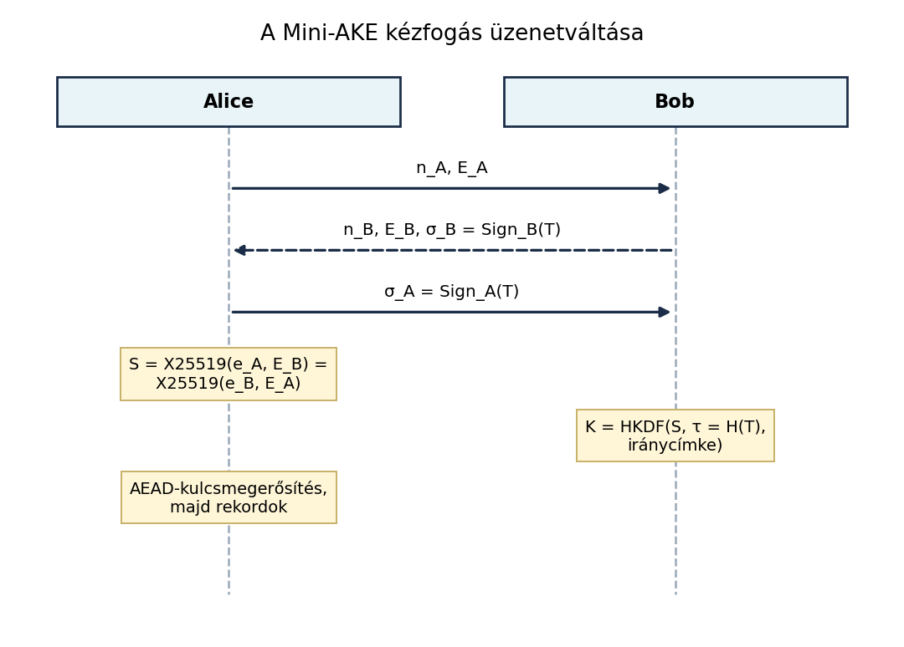

Az 1. projekt: fájltitkosító eszköz AEAD-dal és jelszóból származtatott kulccsal alfejezetben egyetlen felhasználó adatait védtük egy jelszóból származtatott kulccsal. Most két fél között akarunk biztonságos csatornát létrehozni egy aktív támadó által figyelt, módosított és késleltetett hálózaton. A naiv Diffie–Hellman-kulcscsere önmagában nem elég: Mallory közbeékelődve a saját nyilvános értékeit küldheti mindkét félnek, így mindkettővel külön-külön közös kulcsot hoz létre, miközben Alice és Bob azt hiszi, egymással beszél.
A projekt célja egy minimális hitelesített kulcscsere-protokoll tervezése, megvalósítása és szisztematikus támadáselemzése. A primitívek adottak: az X25519 efemer Diffie–Hellmanhoz, az Ed25519 aláíráshoz, a HKDF kulcsszármaztatáshoz, a ChaCha20-Poly1305 AEAD a rekordréteghez. A feladat éppen az, hogy ezeket egyetlen koherens protokollá rakjuk össze, és ne csak „működjön”, hanem minden lépésről meg tudjuk mondani, melyik támadást miért akadályozza meg.

A protokoll két fázisból áll. Először mindkét fél efemer X25519-kulcsot generál, és az efemer nyilvános kulcsokat aláírással összeköti a hosszú távú identitáshoz. Ezután a Diffie–Hellman titokból HKDF-fel irányonként külön AEAD-kulcsot származtatunk, és egy rövid hitelesített üzenettel ellenőrizzük, hogy mindkét fél ugyanazt a kulcsot kapta.
A tervezett protokollnak a következő biztonsági célokat kell teljesítenie:
A támadómodell a következő. Mallory aktív hálózati támadó: lehallgathat, üzeneteket törölhet, késleltethet, módosíthat, visszajátszhat, illetve saját üzeneteket injektálhat. Nem tudja a Diffie–Hellman-problémát (CDH) megoldani az X25519 csoportban, nem tud Ed25519-aláírást hamisítani (EUF-CMA), és nem tudja megjósolni a friss véletlen értékeket. A hosszú távú aláíró kulcsok a munkamenet után kompromittálódhatnak, a munkamenet alatt azonban mindkét fél kulcsai épek.
Jelölések. Legyen a SHA-256 hash-függvény, / az Ed25519 aláírás és ellenőrzés, az efemer kulcspár generálás, pedig az X25519 Diffie–Hellman-művelet. A a 32 bájt hosszú csupa nulla sót jelöli. Az egyenletes véletlen választást jelöl.
Algoritmus (Mini-AKE kézfogás).
Alice (iniciátor):
Bob (válaszadó):
Alice:
cryptography
exchange() ilyenkor kivételt dob);Bob:
Kulcsszármaztatás: Mindkét fél kiszámítja a
transzkript-hasht:
.
Ezután a közös
titokból HKDF-fel irányonként külön 32 bájtos kulcsot származtat:
A HKDF itt HMAC-SHA256-ra
épül, 32 bájt kimenettel; az info bájtsztring a felsorolt
részek összefűzése, elválasztó nélkül, az irányfeliratok ASCII-sztringek
(Alice->Bob, Bob->Alice).
Kulcsmegerősítés:
Rekordréteg. A kézfogás után minden irány a saját AEAD-kulcsát használja. A nonce egy 96 bites számláló, amely 1-ről indul (a 0 a kulcsmegerősítésé volt), és minden üzenet után eggyel nő. A vevő minden irányban nyilvántartja a legnagyobb már elfogadott sorszámot, és ha egy beérkező üzenet sorszáma kisebb vagy egyenlő, mint ez az érték, eldobja. Ez adja a visszajátszás elleni védelmet a rekordrétegben.
Megjegyzés a transzkripthoz. A transzkriptben a protokollverzió-sztring, a felek identitása, a nonce-ok és az efemer nyilvános kulcsok is szerepelnek. Ezért minden olyan módosítás, amely ezek közül bármelyiket megváltoztatja, megváltoztatja a transzkript-hasht, így a származtatott kulcsokat is. Az aláírások pedig a -t hitelesítik, tehát a támadó nem tud érvényes aláírást készíteni egy módosított transzkripthez.
A lenti Python-illusztráció egy teljes, de oktatási célú
Mini-AKE-kézfogást mutat be rögzített tesztvektorokkal. A kód a két fél
oldalán külön kiszámítja az
Diffie–Hellman-titkot és a
kulcsot (az assert az egyezésüket ellenőrzi), mindkét
aláírást ellenőrzi, a kulcsmegerősítő üzenetet Alice oldalán titkosítja,
Bob oldalán visszafejti. A nonce-ok rögzítettek (n_A = 32
nullbájt, n_B = 32 darab 0x01 bájt), a kulcsok
a kód kitalált tesztkulcsai, így a kimenet reprodukálható.
A kimenet (python3, cryptography 46.0.5, ténylegesen lefuttatva, kétszer azonos):
tau[:8] = 3d833449e77b477f
handshake OK, ct len: 25A confirm-A nyílt szöveg 9 bájt, a ChaCha20-Poly1305
pedig 16 bájt hitelesítő címkét ad hozzá, így a rejtett szöveg hossza
bájt.
Közbeékelődés (MITM). Mallory lecseréli Alice efemer kulcsát -re. Bob ekkor a saját transzkriptjét írja alá, amelyben szerepel. Alice megkapja Bob aláírását, de ő a saját -ját ismeri, ezért a -t számítja, és az aláírás-ellenőrzés sikertelen lesz, mert nem a -re készült. Hasonlóan, ha Mallory Bob üzenetét módosítja, Bob aláírása nem fog illeszkedni Alice által számított transzkripthez. A támadó tehát csak akkor tudná a kézfogást végigvinni, ha érvényes Ed25519-aláírást tudna készíteni a módosított transzkriptre, ami az EUF-CMA feltevés szerint elhanyagolható valószínűségű. A kulcsmegerősítő üzenetek ezen felül észlelnék, ha a két fél valamilyen okból mégis eltérő -t számított volna.
Az alábbi ábra a MITM-kísérletet mutatja: Bob a -t írja alá, Alice a saját -jével ellenőriz, és a két transzkript éppen az mezőben tér el. Az interaktív változatban a visszajátszás, a reflexió és a 6. feladat verziócseréje is lejátszható.
Visszajátszás. Tegyük fel, hogy Mallory rögzít egy régi kézfogást, és visszajátssza az üzeneteket. A nonce-ok (, ) részei a transzkriptnek. Ha Alice új munkamenetet indít, ő friss -t generál, ezért a régi -ben lévő nem fog illeszkedni, mert az a régi -ra készült. Hasonlóképpen Bob is friss -t generál, ha régi -et kap, így a régi is érvénytelen lesz. A nonce-ok tehát megakadályozzák, hogy egy régi kézfogást változtatás nélkül újra felhasználjanak.
Reflexió. Tegyük fel, hogy Mallory Alice
üzenetét visszaküldi Alice-nak, mintha Bob válasza lenne. Alice ekkor
egy
formátumú üzenetet vár, amely tartalmazza Bob aláírását is. Mallory nem
tud Bob nevében aláírni, így a támadás elakad. Ha Mallory Bob saját
üzenetét küldi vissza Bobnak, Bob a
formátumú Alice-aláírást várja, amelyet Mallory nem tud hamisítani.
Ráadásul a kulcsszármaztatásban az iránycímkék
("Alice->Bob", "Bob->Alice")
biztosítják, hogy még ha a Diffie–Hellman-érték szimmetrikus helyzetből
származna is, a két irány kulcsa akkor is különböző.
Visszaminősítés. A Mini-AKE-nek nincs algoritmus-
vagy paraméteregyeztetése: a "Mini-AKE-1" verziósztring a
transzkript része. Ha később több rejtjelezőcsomagot akarnánk támogatni,
a megtárgyalt csomagot kötelező lenne a transzkriptbe és a HKDF
info mezőjébe is beletenni. Ellenkező esetben Mallory egy
gyenge csomagra kényszeríthetné a feleket, ahogyan a Protokollszintű hibák: visszaminősítés,
bemenetellenőrzés, kontextuskötés alfejezet Logjam-támadása
mutatta.
Kulcskompromittálás. Ha a munkamenet után Alice hosszú távú aláíró kulcsa kiszivárog, a támadó a jövőben Alice nevében tud kézfogást kezdeményezni, de a régi munkamenetek kulcsait nem tudja visszafejteni. Ennek oka, hogy a munkamenetkulcs az efemer X25519-kulcsokból származik, és az efemer titkos kulcsokat a kézfogás után töröljük. A Diffie–Hellman-probléma megoldása nélkül a támadó a nyilvános efemer kulcsokból nem tudja kiszámítani -t, hiába ismeri a hosszú távú aláíró kulcsot. Ez a forward secrecy. Ha viszont az efemer kulcs a munkamenet alatt szivárog ki, a munkamenetkulcs kompromittálódik, de ez a forward secrecyt nem érinti, mert az efemer kulcsot utána töröljük.
A Mini-AKE nem légből kapott konstrukció: a modern TLS 1.3 kézfogás
ugyanezt a szerkezetet követi, csak több réteggel. A TLS 1.3 szerver és
kliens is efemer (EC)DHE kulcsot cserél, a hosszú távú kulcsot
tanúsítványhoz kötött aláírással hitelesíti, a kézfogás minden üzenetét
egy folyamatosan frissülő transzkript-hashbe gyűjti, és ebből HKDF-fel
származtatja a forgalmi kulcsokat. A kulcsmegerősítést a TLS 1.3
Finished üzenetei végzik, a rekordréteg pedig sorozatszámos
AEAD-ot használ.
A Noise-protokollkeret hasonló elveket használ, de a hitelesítést
gyakran statikus Diffie–Hellman-kulcsokkal, nem pedig aláírásokkal oldja
meg. A mi Mini-AKE-nk a TLS-stílusú aláírt efemer DH-t választja, mert
ez természetesen illeszkedik az Ed25519-alapú identitásokhoz. A Noise
XX mintája is efemer-efemer kulcscsere, de a hitelesítés
ott statikus DH-műveletekkel történik; a kettő közötti választás a
tanúsítványkezelés és a kulcstípus függvénye.
A következő kód a Mini-AKE kézfogás magját mutatja be a
cryptography csomaggal. Rögzített tesztvektorokat (kulcsok
és nonce-ok) használunk, hogy a kimenet reprodukálható legyen; ez
csak oktatási célra való, éles rendszerben mindig friss
os.urandom vagy secrets értékeket kell
használni.
# OKTATÁSI CÉLRA – NEM ÉLES HASZNÁLATRA
from cryptography.hazmat.primitives.asymmetric.x25519 import X25519PrivateKey
from cryptography.hazmat.primitives.asymmetric.ed25519 import Ed25519PrivateKey
from cryptography.hazmat.primitives import hashes, serialization
from cryptography.hazmat.primitives.kdf.hkdf import HKDF
from cryptography.hazmat.primitives.ciphers.aead import ChaCha20Poly1305
import hashlib
def H(*parts):
return hashlib.sha256(b"".join(parts)).digest()
def hkdf(ikm, info):
return HKDF(algorithm=hashes.SHA256(), length=32,
salt=b"\x00"*32, info=info).derive(ikm)
def raw_pk(pk):
return pk.public_bytes(serialization.Encoding.Raw,
serialization.PublicFormat.Raw)
# Tesztvektor kulcsok (csak példa, nem éles használatra)
skA = Ed25519PrivateKey.from_private_bytes(b"A"*32)
skB = Ed25519PrivateKey.from_private_bytes(b"B"*32)
eA = X25519PrivateKey.from_private_bytes(b"C"*32)
eB = X25519PrivateKey.from_private_bytes(b"D"*32)
pkA, pkB = skA.public_key(), skB.public_key()
EA, EB = eA.public_key(), eB.public_key()
nA, nB = bytes(32), bytes([1])*32 # rögzített tesztérték
dom = b"Mini-AKE-1"
T = dom + raw_pk(pkA) + raw_pk(pkB) + nA + raw_pk(EA) + nB + raw_pk(EB)
sigB = skB.sign(T)
sigA = skA.sign(T)
pkB.verify(sigB, T) # Alice ellenőrzése (hiba esetén InvalidSignature)
pkA.verify(sigA, T) # Bob ellenőrzése
S = eA.exchange(EB) # Alice oldala
S_bob = eB.exchange(EA) # Bob oldala
assert S == S_bob and S != bytes(32) # a csupa nulla S-t elutasítjuk
tau = H(T)
kA2B = hkdf(S, dom + b"traffic" + tau + b"Alice->Bob")
kB2A = hkdf(S, dom + b"traffic" + tau + b"Bob->Alice")
kA2B_bob = hkdf(S_bob, dom + b"traffic" + H(T) + b"Alice->Bob")
assert kA2B == kA2B_bob and kA2B != kB2A
ct = ChaCha20Poly1305(kA2B).encrypt(b"\x00"*12, b"confirm-A", T)
assert ChaCha20Poly1305(kA2B_bob).decrypt(b"\x00"*12, ct, T) == b"confirm-A"
print("tau[:8] =", tau[:8].hex())
print("handshake OK, ct len:", len(ct))A kód a kézfogás lényegét mutatja: a közös
és a
mindkét oldalon azonos, az aláírások ellenőrizhetők, a transzkript-hash
bekerül a HKDF info mezőjébe, és az iránycímkék
szétválasztják a két forgalmi kulcsot. A ct hossza 25, mert
a 9 bájtos nyílt szöveghez 16 bájtos Poly1305-címke járul.
Ugyanaz a kulcs mindkét irányba. Ha a HKDF
info mezőjéből kihagyjuk az iránycímkét, akkor
.
Egy reflexiós támadás során a támadó visszaküldhet egy irányba tartozó
rejtett szöveget a másik irányba, és a vevő nem veszi észre a
különbséget. Helyes gyakorlat: minden irányhoz külön,
címkézett kulcs.
A transzkript-hash kihagyása a HKDF-ből. Ha a kulcs csak -től függ, akkor a kulcs nem kötődik az identitásokhoz, a verzióhoz és a kézfogás hitelesített kontextusához; bővítéskor ez visszaminősítéshez vagy ismeretlenkulcs-megosztáshoz (UKS) vezethet. (A visszajátszás ellen a friss efemer kulcsok és nonce-ok védenek: régi -re a válaszadó friss -t és -t választ, így is új.) Helyes gyakorlat: a transzkript-hash mindig legyen a kulcsszármaztatás része.
Prediktálható nonce. Ha
vagy
gyenge álvéletlen generátorból származik, a támadó előre kiszámíthatja,
és visszajátszásos támadást hajthat végre, vagy érvényes aláírást kérhet
egy későbbi transzkriptre. Helyes gyakorlat:
os.urandom vagy secrets használata.
Aláírás-ellenőrzés elhagyása a kulcsszármaztatás előtt. Ha Alice a Bob-aláírás ellenőrzése nélkül számítja ki -t és küldi el a saját -ját, Mallory a saját -jét injektálhatja, Alice vele osztozik a kulcson, és még alá is írja a hamis transzkriptet. Helyes gyakorlat: először mindig ellenőrizzük a beérkező aláírást, és csak utána deriváljunk kulcsot.
1. feladat (A). Definiáld pontosan a forward secrecy fogalmát a Mini-AKE kontextusában, és mutasd meg, hogy a protokoll melyik kulcstörlése biztosítja.
2. feladat (A). Tegyük fel, hogy a HKDF
info mezője csak a "Mini-AKE-1" és az
iránycímkét tartalmazza, de a
transzkript-hasht nem. Mutasd meg, hogy a kézfogás
visszajátszása ettől még NEM sikerül (miért?), és nevezd meg, mit
veszítünk mégis.
3. feladat (B). Egészítsd ki a Mini-AKE-t egy előre megosztott kulccsal (PSK) úgy, hogy a Diffie–Hellman-titok mellé a PSK is bekerüljön a HKDF bemenetébe. Elemezd, hogyan változik a forward secrecy.
4. feladat (B). Tegyük fel, hogy a rekordréteg nem ellenőrzi a sorozatszámokat, hanem minden üzenetnél a nonce-t nulláról indítja. Adj meg egy támadást, amelyben Mallory egy korábbi rekordot visszajátszik.
5. feladat (C). Vázolj egy redukciós bizonyítást arra, hogy ha az Ed25519-aláírás EUF-CMA biztonságú, akkor a Mini-AKE kézfogás aktív MITM-támadó ellen sem tud érvényes, módosított transzkriptet elfogadtatni. Fogalmazd meg a redukció lépéseit.
6. feladat (D). Készíts egy olyan
Mini-AKE-változatot, amelyben a protokollverzió-sztring
("Mini-AKE-1") nincs a transzkriptben, és mutasd meg,
hogyan tud Mallory visszaminősítést elérni, ha a felek támogatnának egy
gyenge "Mini-AKE-0" verziót is. Adj javítást.
Önellenőrzés – válaszok
1. feladat megoldása.
A forward secrecy azt mondja ki, hogy ha a hosszú távú aláíró kulcsok
egy későbbi időpontban kiszivárognak, a korábbi munkamenetek
AEAD-kulcsai akkor is titkosak maradnak. A Mini-AKE-ben a
munkamenetkulcs a Diffie–Hellman-titokból
származik. Az efemer titkos kulcsokat
és
a kézfogás után töröljük. A támadó a kiszivárgott aláíró kulccsal nem
tudja kiszámítani
-t,
mert az csak az efemer kulcsokból következik, és a CDH feltevés szerint
ismeretében
kiszámíthatatlan. Ezért a régi munkamenetek védettek.
2. feladat megoldása.
Visszajátszott
-re
Bob friss
-t
és
-t
választ, így
és
is új; a régi
nem ellenőrizhető az új
-n,
a kézfogás megszakad. A
szerepe tehát nem a visszajátszás elleni védelem (azt a friss efemer
kulcs és nonce adja), hanem a kulcs és a teljes hitelesített kontextus
összekötése (vö. a TLS 1.3 kulcsütemezése). Ha
kimarad, a kulcs nem köti a teljes kontextust (identitások, verzió,
később a megtárgyalt csomag), így egy jövőbeli bővítésnél a kulcs és a
hitelesített transzkript elválhat.
3. feladat megoldása.
Egészítsük ki a HKDF bemenetét:
A PSK hozzáadása növeli a biztonságot: ha a Diffie–Hellman-probléma a
jövőben megoldhatóvá válik, a PSK akkor is védi a munkamenetkulcsot,
feltéve hogy a PSK nem szivárgott ki. A forward secrecy abban az
értelemben megmarad, hogy a hosszú távú aláíró kulcs kompromittálódása
továbbra sem fedi fel a PSK-t, és az efemer kulcsok törlése után a
DH-titok sem ismert. A PSK kompromittálódása azonban a jövőbeli
munkamenetekre nézve megszünteti ezt a plusz réteget.
4. feladat megoldása.
Először is: ha minden rekord ugyanazzal a kulccsal és
-val
titkosul, az nonce-újrahasználat: a ChaCha20 kulcsfolyam ismétlődik, így
,
és a Poly1305 egyszer használatos kulcsa is ismétlődik, ami két címkéből
hamisítást tesz lehetővé. Ez önmagában végzetes. Ezen felül a
visszajátszás: a vevő nem tudja megkülönböztetni a friss és a
visszajátszott rekordot. Mallory rögzít egy érvényes
rekordot, majd később újra elküldi. A vevő visszafejti, és mivel a kulcs
és a nonce egyezik, a dekódolás sikeres lesz. A sorozatszámok szigorú
monotonitása ezt akadályozza meg: a nonce szigorúan monoton sorszám, és
a vevő a
max sorszámú rekordot eldobja.
5. feladat megoldása.
Vázlat: Tegyük fel, hogy egy
támadó képes a Mini-AKE kézfogásban egy módosított
transzkriptet elfogadtatni valamelyik féllel. Ez azt jelenti, hogy
előállít egy érvényes
aláírást a
-re
az egyik fél hosszú távú kulcsával. Ekkor redukálhatunk az EUF-CMA
biztonság törésére: a redukció
kap egy nyilvános aláíró kulcsot, és azt használja az egyik fél hosszú
távú kulcsaként. A protokoll összes többi lépését
szimulálja
számára, a kihívás-aláírás kéréseket a saját aláíró orákulumához
irányítja. Amikor
egy módosított
-re
érvényes
-t
ad,
ezt a párt visszaadja mint hamisítást. A hamisításnak olyan üzenetre
kell szólnia, amelyet az orákulum nem írt alá.
véletlenül választja, melyik fél (n identitás esetén melyik identitás)
kulcsa helyére teszi a kihívás-kulcsot, ezért
eséllyel talál (két félnél
).
Mivel a becsületes felek csak friss
/-t
tartalmazó transzkriptet írnak alá,
csak legfeljebb
valószínűséggel egyezik egy korábban aláírt transzkripttel
(
munkamenet, 256 bites nonce-ütközés). Így
,
ami az Ed25519 EUF-CMA biztonsága mellett elhanyagolható.
6. feladat megoldása.
Tegyük fel, hogy a protokoll támogatja a "Mini-AKE-0"
gyenge verziót (például rövidebb kulcsot vagy gyenge AEAD-ot), és a
verziósztring nincs a transzkriptben. Mallory a kézfogás elején
lecseréli a verziómezőt "Mini-AKE-1"-ről
"Mini-AKE-0"-ra, és ezt mindkét irányban megteszi. A felek
a gyenge verzió szerint járnak el, de az aláírások továbbra is
érvényesek, mert a verzió nem része
-nek.
Így a támadó gyenge kulcsokra kényszeríti a feleket, amelyeket aztán
feltörhet. A javítás: a verziósztring legyen a transzkript és a HKDF
info része, pontosan ahogy a Mini-AKE alapváltozatában.
A Mini-AKE egy minimális hitelesített kulcscsere-protokoll, amely efemer X25519 Diffie–Hellmant, Ed25519-aláírásokat, HKDF-et és ChaCha20-Poly1305 AEAD-ot ötvöz. A kézfogás során mindkét fél friss efemer kulcsot és nonce-ot cserél, a transzkriptet aláírják, és a DH-titokból irányonként külön forgalmi kulcsot származtatnak a transzkript-hash felhasználásával. A kulcsmegerősítő AEAD-üzenetek biztosítják, hogy mindkét fél ugyanazt a kulcsot kapta. A protokoll védett a közbeékelődés ellen az EUF-CMA aláírások miatt, a visszajátszás ellen a nonce-ok és a sorozatszámok miatt, a reflexió ellen az iránycímkék miatt, a visszaminősítés ellen a verziósztring transzkriptbe kötésével, és forward secrecyt ad az efemer kulcsok kézfogás utáni törlésével. Továbbvitt eredmény: a protokolltervezés itt gyakorolt lépéseit a A kriptográfia fogalmi térképe és döntési fája alfejezet általánosítja döntési fává; az itt bemutatott HKDF-, transzkript- és sorozatszám-elveket a TLS 1.3 és a Noise is használja.
A konstrukció a HKDF (RFC 5869), az X25519 (RFC 7748), a TLS 1.3 (RFC
8446) és a ChaCha20-Poly1305 ismert specifikációira épül. A Python-API a
cryptography csomag dokumentációját követi; a pontos
osztály- és metódusnevek verziófüggők lehetnek, ezért éles használat
előtt ellenőrizni kell a telepített könyvtár dokumentációját. A
tesztvektorok itt oktatási célúak, és nem szabványos NIST/RFC
tesztvektorok.